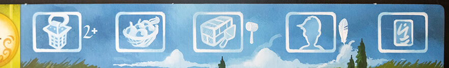
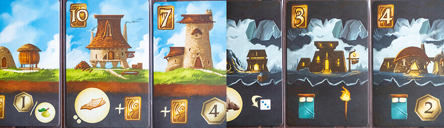

In the name of continuing the blogification of our posts from our Instagram page, let’s explore the world, and graphic design, of Above and Below.
Above and Below is an exploration/building/worker management game with a heavy storytelling aspect. Like all Ryan Laukat games, it has really beautiful art.
Game design: Ryan Laukat
Illustration: Ryan Laukat
Publisher: Red Raven Games
The player boards in Above and Below are where you keep your villagers (workers) and assign them to different tasks. At the top of the board there is a reminder of the different actions you can take with you villagers, and each action icon is also used in the rulebook when describing that action, making it easy to look up if you ever forget.
Managing your villagers is one of the main things you do in Above and Below. There are three different types of villagers: Builders (hammer icon), Scribes (quill icon) and Explorers (no additional icon). The icons on the villagers correspond to the actions they can take. Most actions don't require any special villagers, but the build action requires a hammer icon and the train action requires a quill icon. This is depicted next to the respective actions on the action reference on the player board.
As mentioned above, the hammer and quill icons on the villagers are required for the build and train actions respectively. The dice on the other hand matter when you take an explore action. Then you will need a certain number of "explore", indicated by the little lanterns under the dice. For each involved villager, you roll one die, and get the amount of lanterns that your roll indicates. I do feel that the lantern icons are not super clear, at first they looked like little houses to me, but once you've learned what they are, the icons work well enough. Since there are two dice on each villager, it is quite easy to misinterpret it as rolling two dice, instead of the result of the one die deciding which one is applied.
When you've used your villagers they are moved to the exhausted area of your player board (moon icon). If you've used them in an explore action and chose to exert them (granting you an extra explore, and hopefully greater rewards) they are moved to the injured area (medical plus icon). Then you need to use potions, cider and beds to make them ready for the next round of the game. I love how natural objects (trees) in the background are used to separate the different areas, because they are very clearly different areas, without the separators feeling like they break the theme. However, the road going across the player boards kind of makes it look like it's separated into six areas instead of three, which may confuse new players.
Each player board has some unique feature in the artwork that has no purpose in the gameplay. This tripped me up at first, as I thought they had some sort of significance, but once I figured out that it was just decoration I just found it cute. However, I'm really against putting things in your game that may seem to be significant when they actually aren't. This is extra important when you, like in this game, use natural parts of the illustration to convey meaning (the trees separating areas), while other parts of the illustration are just there to be pretty.
At the bottom of the player board there is an advancement track, where you place resources to gain victory points and a higher income. Each spot has a round mark for where to place the resource, a victory point icon that shows how many points each resource in that space gives, and one money icon showing your current income. It's a bit unclear that the money icons represent income, and I would have wished that it was clearer by the victory point icons that those points are for each resource on that spot, which would also help make it clear that you actually can place more than one resource on each spot.
The cards in Above and Below have their cost in the upper left corner and their effect in the lower third of the card. The effects are all explained through icons, and for some it's a good thing there is an icon reference. Most of the icons follow the same rules though, with a hand meaning you gain something immediately, for example. The cards represent buildings, and there are buildings for your village (above) and for the caves (below). Both types of cards have the same layout.
Both the above and below cards are illustrated so they fit together perfectly side by side, which really makes it feel like you're actually building your village.
Some buildings make you gain resources. However, you never gain the resources immediately. Instead, they are kept on the cards until you harvest them. Some buildings have resources that are replenished each round (depicted with an arrow next to the resource icon) and some gain a certain number of resources when you buy them but never replenishes (depicted with a number of dots next to the resource icon equal to the number of resources that are placed on the card). The non-replenishing goods especially have a great design in my opinion. The dots only need to be noticed when you buy the card, and once you've placed the resources on the card they are no longer necessary. They are visible enough when they need to be, and not at all distracting when they no longer matter.

Other buildings have income modifyers, things you get at the end of each round. This is depicted with a plus sign before the icon for what is gained. To me this is illogical as a plus sign means that you add it once. I would rather have an icon for income being two circular arrows to make it clear that it is a recurring gain.
The icons for money (shiny golden rectangles) and for victory points (shiny golden heptagons) feel a bit confusing. Mostly, the victory point icons look more like money than the money icons, and I don't even know what the money icons look like. However, once you get over the initial bump of them being kind of reversed, they are easy to tell apart and that's really what matters most.
The card backs for the buildings are simple in design. They have the icon for the building action, so you never have to wonder how you can buy them. To differentiate the above buildings from the below buildings the card backs have the same backgrounds as the respective buildings.
There are three types of special building cards in Above and Below. They are Star houses, Key houses and Starting houses. Their card backs are differentiated through small icons above the building action icon, a star for the Star houses, a key for the Key houses and three beds for the Starting houses (because the Starting houses grant three beds).
The main feature of the game board in Above and Below is the reputation track (it's even called the reputation board in the rulebook). Opposite to what you might think, the further down on the reputation track you are, the better your reputation is. Within the game, this kind of makes sense though, as you mostly affect your reputation while exploring the below. Though, you might generally want to be careful with this type of flipping of expectations, as you don't want your players to have to relearn things they could already know.
The big victory point icons on the left, representing how many extra points you get based on your overall placement compared to the other players, are a bit confusing, as they look like they are the same type of icons as those further down next to the spots on the track. We were initially confused about why you suddenly went from 5 points to one point. The issue is mostly that the big icons are too close to the track, and they could also have had a 1st, 2nd and 3rd next to them to make it clearer.
There is also a round track on the game board, consisting of 7 small caves - one for each round - and a round marker (though it's square 😉). It's a simple and well tested way to track the rounds of a game. Thanks to the stark contrast between the caves and the surrounding areas it's super easy to see exactly how many rounds are left in the game.
Two more features on the game board are the cider token and the available villagers. The cider token is given to the first player who takes the labor action each round, and the icon next to the cider token is the icon for the labor action, as a reminder. The row of available villagers have a cost underneath each villager, showing the cost of training that villager, along with a quill icon to remind players that you need a quill icon on the villager that is used to train a new villager.
One of the greatest things with the game board is the resource reference, showing you what resources there are and how rare each one is. They are grouped in "common" "uncommon" and "rare", each group clearly separated from the next with a gap, but even within the groups they are sorted from most common to most rare, top to bottom.
Before reading the rules we were so confused about the cave cards in Above and Below, but once we learned how they are used in the game I found them to be genius. Each number refers to one encounter in the encounter book, so when you explore you take one cave card and roll one D6 to see which one of the possible 6 encounters on the card will be read to you. It is such a simple way of randomizing between the more than 200 encounters without needing an extreme amount of extra components. The fact that the cave card is then used as spots to build underground houses just makes it even better.
The storytelling aspect really shines through in the explore action, during which a paragraph is read from the Encounter book. I don't want to spoil any of the encounters for you, but the encounter paragraphs are written and layed out in a way that makes it easy to find the correct paragraph without accidentally reading something you shouldn't (thanks to big, bold numbers), as well as reading everything but the rewards aloud thanks to a clever use of bold text.
A good rulebook should always state the contents of the box, preferably with pictures. This helps new players check that they have everything in their new game, and also serves to familiarize them with the contents, learning what each component is called in a simple way. This is done beautifully in the rulebook for Above and Below, with the text boxes actually connected to their respective component image, making it unquestionable which component the text refers to.
Explaining how to use certain components can be frustrating when using only text, but if you pair explanatory text with images and arrows, like they did when explaining the player boards in the rulebook, it becomes so much easier.
The setup spread in the rulebook is really well laid out. I'm a sucker for a numbered setup list with the numbers corresponding to different parts of a setup image. This makes it easier both when you're setting the game up for the first time and want to check that you understand the text correctly, and when later just checking some details by looking for the detail in question in the image, and then looking up the corresponding number in the list.
The actions are described in what I would say is a great order, the information building on the previous actions and most necessary information being presented before it's needed. For example, the Explore action is described before the Build action, as you gain cave cards through the Explore action that you can later use as spaces to build buildings on.
I love the fact that there is an icon reference in the rulebook. With the amount of cards with only icons on them, it is important for players to be able to look up what different icons mean.
They utilize the back of the rulebook for some very useful quick references. There is a shorthand for all the available actions, as well as a reminder of what to do at the end of a round, and even a reminder of what items are used for what part of resting villagers from injured to ready.
What stands out the most in Above and Below is the beautiful artwork, and I feel like the graphic design and player usability is sometimes overlooked in favor of prioritizing the artwork. Generally, the graphic design is good though, and there are a lot of little details that heighten the experience. I just feel like it had the potential to be even better, if the focus had been shifted.